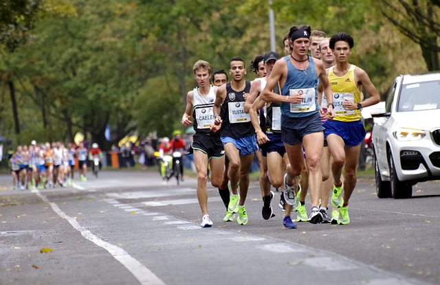

Marathon
Participez à notre Marathon Annuel ! Relevez le défi et venez repousser vos limites lors de notre Marathon Annuel, un événement sportif incontournable pour tous les passionnés de course à pied, débutants comme confirmés. Que vous souhaitiez battre votre record personnel ou simplement vivre une expérience inoubliable, ce marathon est l’occasion idéale de vous surpasser. Pourquoi participer ? Un parcours exceptionnel : Découvrez un tracé unique qui vous emmènera à travers des paysages magnifiques et des sites emblématiques de notre ville. Une ambiance festive : En plus de l’aspect sportif, profitez d’une ambiance conviviale et motivante avec des stands d’animation, des encouragements tout au long du parcours et une grande fête à l’arrivée ! Pour tous les niveaux : Que vous soyez coureur confirmé ou amateur, notre marathon propose plusieurs distances adaptées à votre niveau. Inscrivez-vous pour le marathon complet (42 km), le semi-marathon (21 km) ou le parcours découverte (10 km). Un objectif solidaire : En participant, vous soutenez des causes locales et nationales, car une partie des fonds récoltés sera reversée à des associations caritatives. Inscriptions ouvertes maintenant ! Ne manquez pas cette occasion de vivre une aventure sportive inoubliable. Inscrivez-vous dès aujourd'hui et commencez à vous préparer pour le grand jour. Rendez-vous le 27/2/2025, au départ 320 avenenue d ela montagne, pour une journée de sport, de partage et de dépassement de soi ! 
Velo
Vous êtes passionné de vélo et prêt à relever un défi ? Alors notre concours est fait pour vous ! Le vélo, c’est bien plus qu’un moyen de transport – c’est une passion, un mode de vie et un moyen de se surpasser. Que vous soyez un cycliste chevronné ou un amateur en quête d’aventure, ce concours vous offre l’opportunité de découvrir tout ce que le vélo peut vous apporter.
Pourquoi participer ? Amélioration de votre condition physique : Le vélo est une discipline qui allie endurance, force et souplesse, idéale pour renforcer votre corps tout en préservant vos articulations. Bien-être mental : Rouler en pleine nature, c’est se ressourcer, se libérer de la routine et profiter d’un moment rien que pour vous. Accessibilité à tous les niveaux : Que vous soyez ici pour le plaisir ou pour la performance, il existe une catégorie pour chaque niveau.
Les épreuves du concours : Parcours Découverte : Pour les cyclistes novices, une épreuve agréable et accessible pour explorer les environs en toute sécurité. Perfectionnement Technique : Pour ceux ayant déjà un bon niveau, cette épreuve inclut des défis techniques pour tester et améliorer votre maîtrise du vélo. Course Sportive : Un parcours exigeant pour les plus expérimentés, comprenant des dénivelés et des défis techniques qui mettront vos capacités à l'épreuve.
N’attendez plus pour vous inscrire et pédaler avec nous ! Que vous soyez là pour repousser vos limites, rencontrer d’autres passionnés ou simplement pour découvrir de nouveaux horizons, ce concours est l’occasion parfaite. Contactez-nous dès maintenant pour plus d’informations et réservez votre place pour notre prochain événement !

Natation
Bienvenue à notre Concours de Natation ! Plongez dans l’univers passionnant de la natation et relevez le défi dans un sport complet qui allie plaisir, performance et bien-être. Que vous soyez novice ou nageur expérimenté, ce concours est conçu pour vous offrir une expérience unique et stimulante dans un cadre sécurisé.
Pourquoi participer ? La natation est un exercice complet qui mobilise tous les groupes musculaires, améliore la coordination et favorise une excellente condition cardiovasculaire. En plus de renforcer le cœur, nager régulièrement permet de réduire le stress et de profiter d’une détente inégalée, idéale pour se ressourcer. Accessible à tous les âges et niveaux, la natation est une discipline qui s’adapte à chacun et procure des bienfaits durables.
Les épreuves du concours : Épreuve pour débutants – Une course d’initiation pour ceux qui veulent s’essayer à la compétition en toute confiance. Course de Perfectionnement – Pour les nageurs confirmés souhaitant tester leurs techniques et améliorer leur vitesse et endurance en crawl, brasse, dos ou papillon. Épreuve Compétitive – Un défi de haut niveau pour les nageurs aguerris, prêt à repousser leurs limites avec des courses intenses sur différentes distances.
Rejoignez-nous ! Que vous vouliez découvrir la compétition, vous mesurer à d’autres passionnés ou simplement dépasser vos propres objectifs, notre concours de natation est fait pour vous. Inscrivez-vous dès aujourd’hui pour plonger dans l’aventure et révéler tout votre potentiel !
Horaires et inscriptions disponibles sur notre site

Événements à venir
Rejoignez-nous pour des activités sportives stimulantes et inclusives qui favorisent l'esprit d'équipe et la camaraderie.
Date : 12 Janvier 2025 : Grand concours de natation
Date : 10 Juillet 2025 : Grand concours de Marathon de Quebec
Date : 11 Septembre 2025 : Grand concours de velo
Les Intervenants
Kathrine Switzer

Kathrine Switzer, pionnière du marathon féminin, est devenue en 1967 la première femme à courir officiellement le marathon de Boston, défiant les interdictions imposées aux femmes. Malgré une tentative d'exclusion par un officiel, elle a terminé la course et marqué l'histoire du sport. Grâce à son action, elle a contribué à l'introduction du marathon féminin aux Jeux olympiques de 1984. Aujourd'hui, elle continue d'inspirer à travers ses discours et écrits, et lors de son intervention, elle partagera son expérience et les mesures nécessaires pour renforcer l'égalité dans le sport.
Martin Simard

Martin Simard, athlète et coach canadien, partagera son expertise en triathlon et ses méthodes de coaching pour inspirer les jeunes athlètes. Lors de son intervention, il mettra en avant l’importance de la discipline et de la résilience dans le sport, tout en abordant des initiatives qui favorisent le bien-être et l'inclusion communautaire. Sa vision et son expérience offriront aux participants des perspectives pour encourager une culture sportive positive et accessible.
Florent Manaudou

Florent Manaudou, champion olympique et figure emblématique de la natation française, interviendra pour partager son parcours exceptionnel et ses expériences uniques dans le monde du sport de haut niveau. Connu pour sa maîtrise des épreuves de sprint, notamment avec sa médaille d'or au 50 mètres nage libre aux Jeux olympiques de Londres en 2012, il parlera des stratégies et de la discipline qui l’ont conduit au sommet. Manaudou abordera aussi son retour triomphant après une pause, mettant en lumière les défis et les motivations qui l’ont poussé à revenir. Son intervention inspirera les jeunes athlètes en soulignant l'importance de la persévérance, de la passion et du dépassement de soi.
Rejoignez Nos Séances de Formation Sportive Hebdomadaire et Atteignez Vos Objectifs !
Nous vous invitons à vous inscrire dès aujourd'hui à nos séances de formation sportive hebdomadaire, conçues pour tous les niveaux, du débutant au plus expérimenté ! Ces sessions sont l'occasion parfaite de développer votre condition physique, d'améliorer vos performances et de découvrir de nouvelles techniques sous la supervision de nos entraîneurs qualifiés. Rejoindre notre communauté dynamique vous permettra également de vous motiver mutuellement et de créer des liens avec d'autres passionnés de sport. Ne laissez pas passer cette chance d'atteindre vos objectifs sportifs dans un environnement encourageant et stimulant. Inscrivez-vous maintenant et commencez à transformer votre pratique sportive !
Date :Tous les Samedi
Nos Partenaires